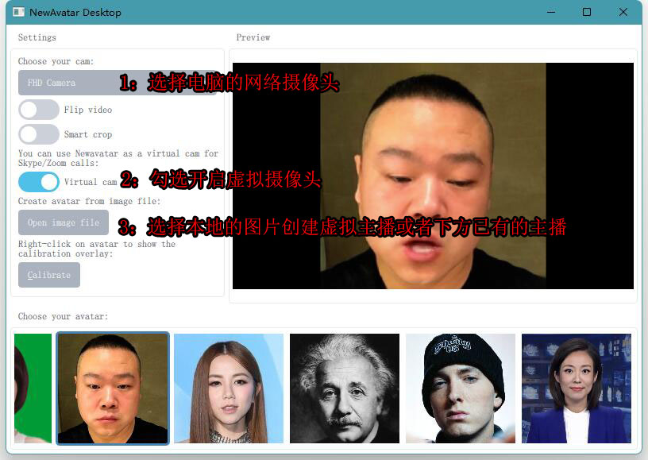
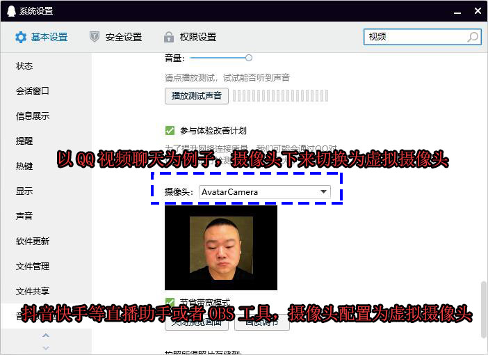
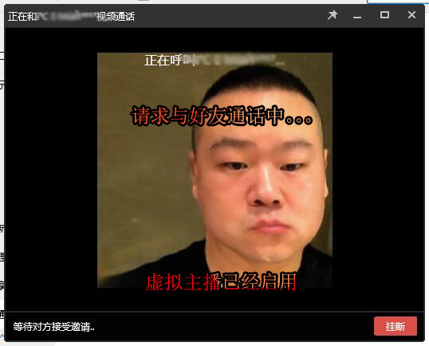
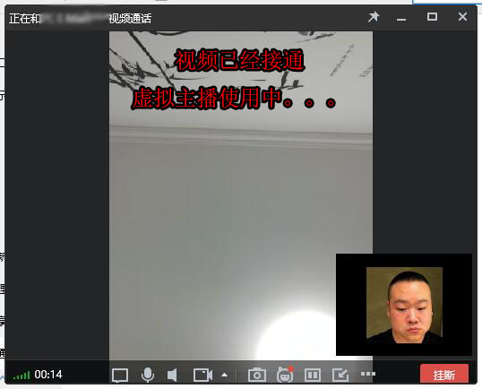

NewAvatar的使用教程
NewAvatar为PC电脑软件，启动前先确定电脑有可用的摄像头。然后，摄像头对准自己的面部，用自己的面部动作就可用驱动虚拟主播。
NewAvatar为PC电脑软件，启动前先确定电脑有可用的摄像头。然后，摄像头对准自己的面部，用自己的面部动作就可用驱动虚拟主播。

我们以QQ视频聊天为例，在QQ的设置中，选择由newavatar创建的虚拟主播摄像头。如果需要使用进行直播，请使用对应的平台直播助手选择虚拟摄像头。OBS等软件操作也是类似，需要配置摄像头为虚拟主播摄像头。

把虚拟主播摄像头当成普通摄像头使用，设置成功后，直接去找QQ好友进行视频聊天。

视频连接成功，已经可用成功使用了。

软件操作简单，使用过程的如果由任何问题可用联系客服。
kefu@motionface.cn